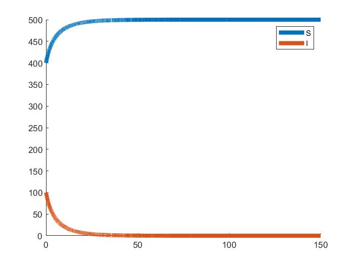
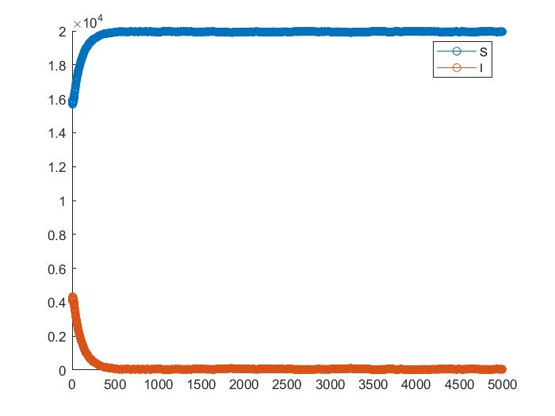
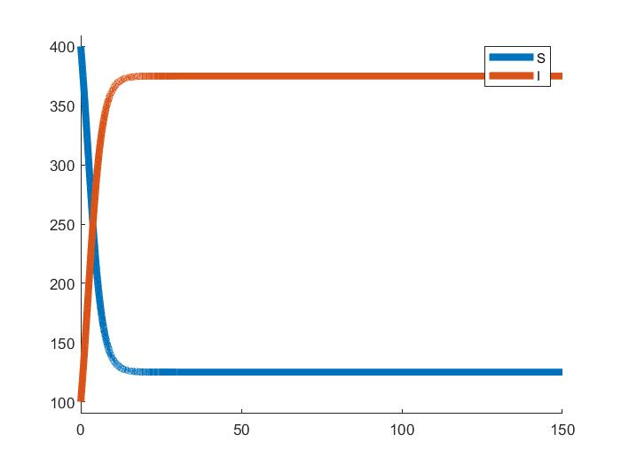
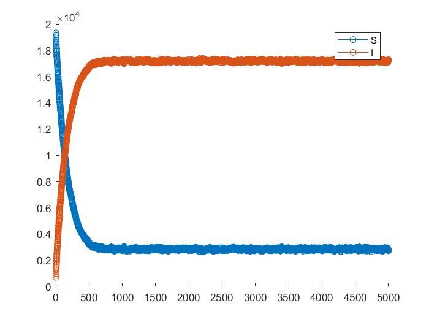
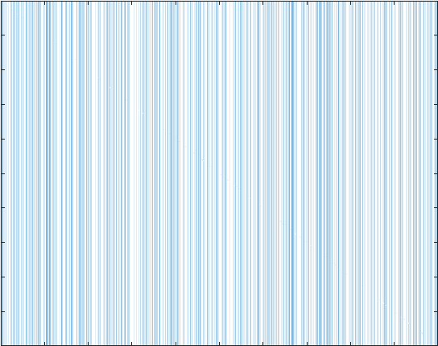

HYY Home
|
Hao-Yang Yen

Experience
|

Learning
|

Research
|

Explore
|
Tensor Network Approach for Stochastic dynamics
I do this research in 2024 summer. PI: Prof. Hong-Yan Shih and Yi-Ping Huang, Academia Sinica
The tensor network (TN) framework is a robust approach for solving many-body quantum system problems.
Techniques such as matrix product states (MPS) and the density matrix renormalization group (DMRG) provide efficient
numerical tools for these challenges. Recently, physicists have found that these methods can also be applied to other systems,
including stochastic dynamics problems.
- Meeting Slides
Group Meeting Slides #1.
Subgroup Meeting Slides #2.
Subgroup Meeting Slides #3.
- The SIS Model and the TN Approach
The one-dimensional SIS model is a simple but
classic and useful model that can describe the non-equillibrium phase transitions. We can solve this model
by sovliving differential equations or Monte Carlo method. As the following figures demonstrate:


The absorbing phase of the SIS model simulation with foward Euler method and Monte Carlo method.


The endemic phase of the SIS model simulation with foward Euler method and Monte Carlo method.
The SIS model can be described in differential equation form
\(\displaystyle\frac{dS}{dt}=-\beta S I+\gamma I\)
\(\displaystyle\frac{dI}{dt}=\beta S I-\gamma I\)
There are two phases in the one-dimensional SIS model.
In differential equation form we have the theorem
If \(\beta/\gamma\leq 1\),then \(\lim_{t\xrightarrow{}\infty} (S,I)=(N,0),\)
If \(\beta/\gamma> 1\), then \(\lim_{t\xrightarrow{}\infty} (S,I)=(\frac{\gamma}{\beta}N,(\frac{\gamma}{\beta}-1)N).\)
These two convergence behaviors correspond to the absorbing phase and the endemic phase respectively.
The numerical solutions of the absorbing phase and the endemic phase.

The absorbing phase of the SIS model simulation with foward Euler method and Monte Carlo method.

The endemic phase of the SIS model simulation with foward Euler method and Monte Carlo method.